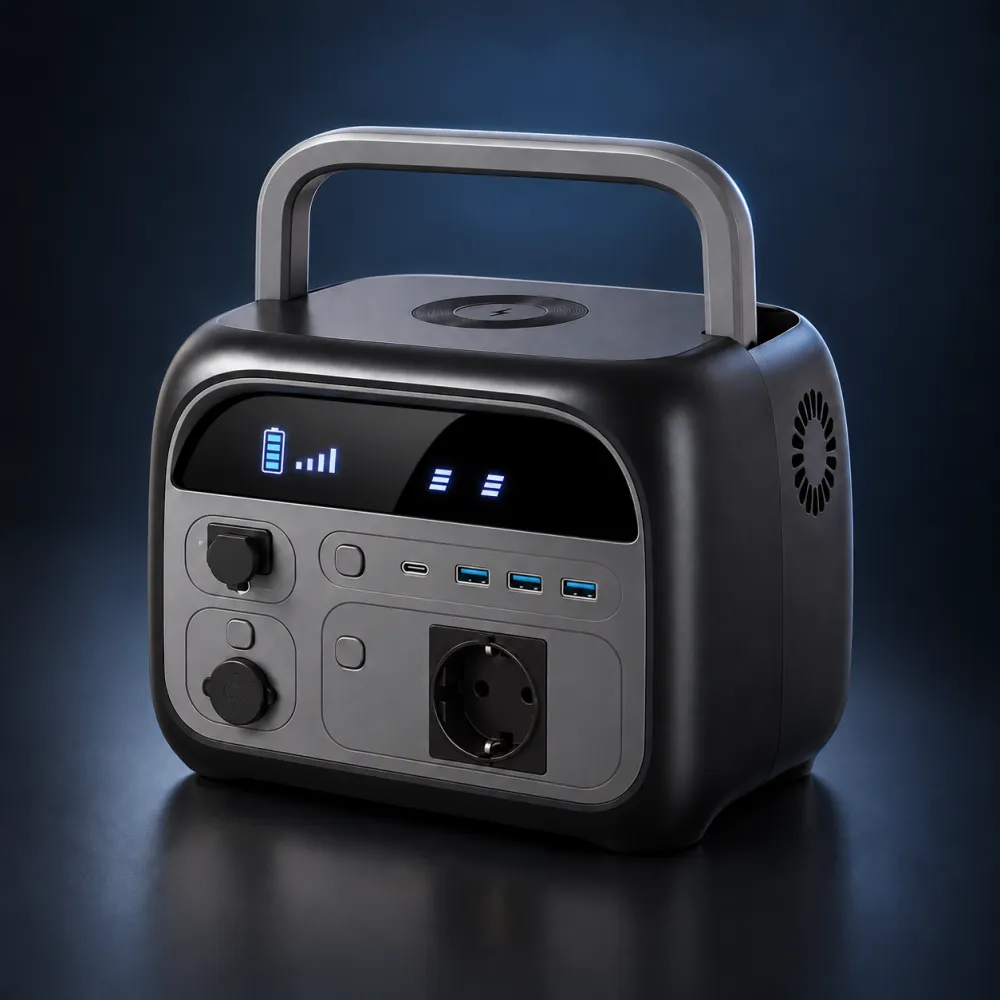
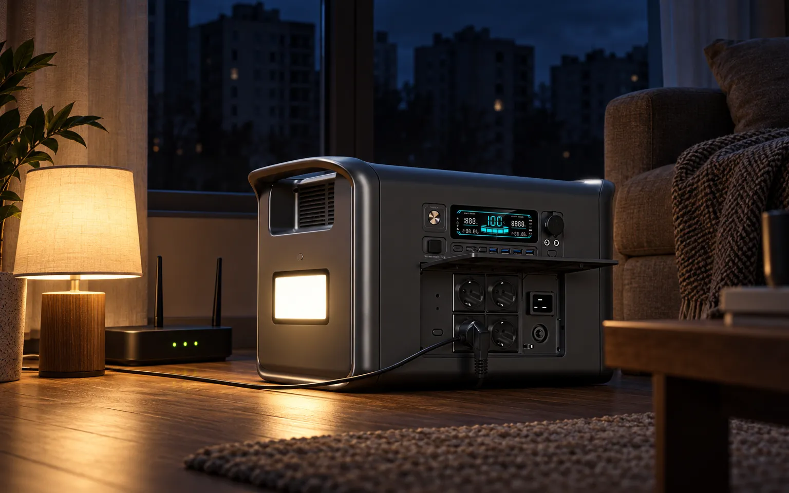
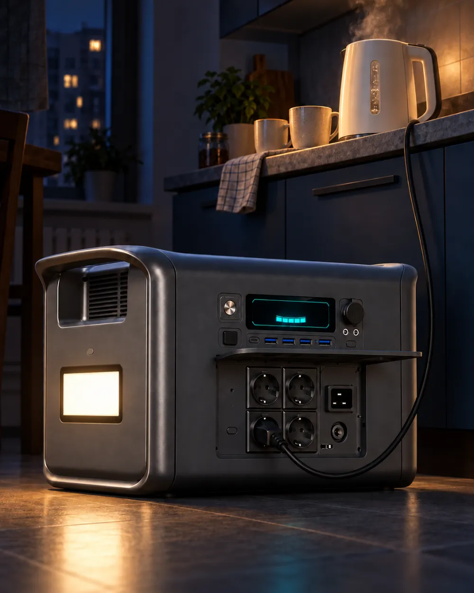
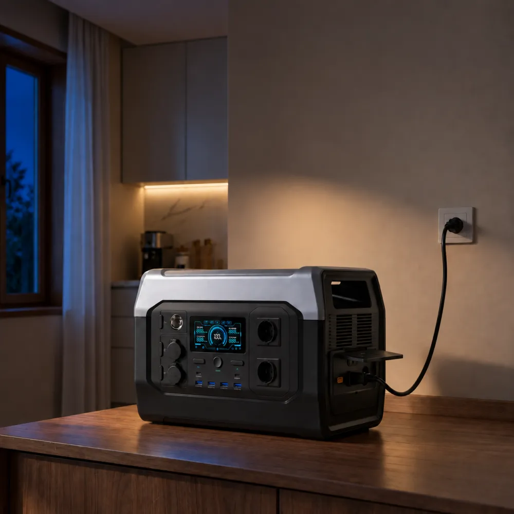
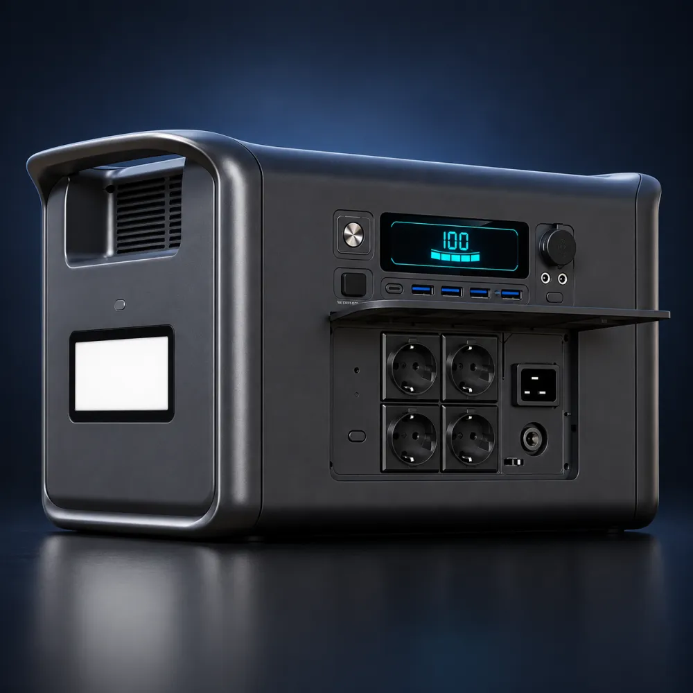
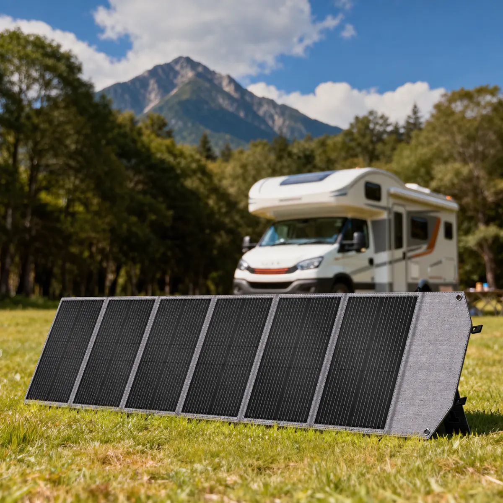

AP400
Роутер, світло і телефони. Легко перенести однією рукою, а телефон заряджається просто на кришці, без дроту.
- Ємність
- 345 Вт·год
- Потужність
- 500 Вт
- Від мережі
- ~2,3 год
- Вага
- 5 кг

CTOLITY AP2000 стоїть у кутку, поки мережа є, і тримає заряд. Зникає напруга, і менш ніж за 20 мілісекунд роутер, холодильник та лампи вже працюють від неї.
Вхід від мережі розрахований на 1000 Вт, тому AP2000 набирає 0-100% приблизно за 2 години, а якщо розрядили не в нуль, то й за годину. Поки ви встигаєте попрати й приготувати, станція вже знову повна.
Станція увімкнена в розетку, техніка увімкнена в станцію. Коли напруга зникає, живлення перемикається на батарею менш ніж за 20 мс, тож роутер і холодильник цього зазвичай навіть не помічають. Для настільного ПК без власного ДБЖ краще перевірити один раз, деякі блоки живлення чутливіші.
Станцію можна заряджати від сонячних панелей до 600 Вт, тоді повна зарядка займає близько 4 годин ясного дня. Є й вхід від прикурювача авто на 12 В, він повільний (100 Вт), але виручає, коли в машині лишився бензин, а вдома лишилась темрява.
Позначте, що працюватиме під час відключення. Цифри поруч із приладами типові, точне споживання вашої техніки написане на наліпці або блоці живлення.
Інвертор видає чисту синусоїду, як у нормальній мережі, тому з ним спокійно працює електроніка котла, насоси й компресори. Для пускових струмів є запас до 2600 Вт.

3000+
повних циклів, після яких батарея ще тримає 80% ємності. Навіть якщо розряджати її щодня, це понад 8 років.
Літій-залізо-фосфатні елементи значно стабільніші за NMC з дешевих павербанків: вони не схильні до теплового розгону при перегріві чи пошкодженні. Для станції, яка місяцями стоїть у квартирі поруч з дитячою, це головний аргумент.
Контролер стежить за перезарядом, глибоким розрядом, струмом, коротким замиканням і температурою кожної групи елементів. Якщо щось не так, станція вимкне вихід сама.
Віддавати енергію станція може від -10 °C, а заряджатись лише від 0 °C. Тобто тримати її взимку на незаскленому балконі - погана ідея, місце їй у квартирі.
На AliExpress усі три моделі продаються на одній сторінці, потрібну обираєте у варіантах товару. Різниця не лише в ємності, а й у вазі: 23 кілограми AP2000 - це станція, яка живе в квартирі, а не їздить з вами на риболовлю.

Роутер, світло і телефони. Легко перенести однією рукою, а телефон заряджається просто на кришці, без дроту.

Квартира без котла: холодильник, робота з ноутбука, телевізор увечері. Заряджається найшвидше з трьох.

Дім, де під час відключень мають працювати котел, холодильник і кухня. Чотири розетки 220 В.

Усі три станції мають вбудований MPPT-контролер і вхід XT60. AP2000 приймає до 600 Вт від панелей напругою 12-48 В і за ясний день заряджається приблизно за 4 години. XP1000 бере до 500 Вт, AP400 до 150 Вт. Панель із роз'ємом MC4 підключається через звичайний перехідник MC4‑XT60.
| Ємність | 2048 Вт·год |
|---|---|
| Хімія | LiFePO4 |
| Ресурс | понад 3000 циклів до 80% |
| Захист | BMS, 16 рівнів |
| Інвертор | 2400 Вт, пік 2600 Вт, чиста синусоїда |
|---|---|
| Розетки 220 В | 4 |
| USB-C | 2 шт., 100 Вт і 22,5 Вт |
| USB-A | 4 шт., QC 3.0, 18 Вт |
| 12 В | прикурювач і 2 × DC5525, до 200 Вт |
| Режим ДБЖ | перемикання менш ніж 20 мс |
| Від мережі | 1000 Вт, 0-100% приблизно за 2 год |
|---|---|
| Від сонця | до 600 Вт, 12-48 В, XT60, MPPT |
| Від авто | 12 В, 100 Вт |
| Розміри | 483 × 301 × 301 мм |
|---|---|
| Вага | 23 кг |
| Робоча температура | розряд від -10 до 45 °C, заряд від 0 до 45 °C |
| Додатково | LED-панель (2 режими, стробоскоп, SOS), РК-дисплей |
Дані взяті з документації виробника та сторінки товару. Там, де джерела розходяться (час перемикання ДБЖ, час зарядки), ми вказуємо обережніше значення.
Так. Котлу потрібна чиста синусоїда, і інвертор AP2000 видає саме її. Котел з циркуляційним насосом споживає в середньому 100-150 Вт, тож лише на котлі станція протримається близько 12 годин, а разом з холодильником і роутером - приблизно 7.
Можна, саме так працює режим ДБЖ. Поки є мережа, техніка живиться через станцію, а батарея дозаряджається. Коли світло зникає, станція перемикається на батарею менш ніж за 20 мс.
Енергією. Типовий комп'ютерний ДБЖ з акумулятором 12 В 9 А·год зберігає близько 100 Вт·год і тримає ПК хвилин десять. У AP2000 енергії майже у 20 разів більше, і батарея LiFePO4 витримує тисячі циклів, а не пару сотень, як свинцева.
LiFePO4 - найбезпечніша з поширених літієвих хімій, а BMS вимикає вихід при перегріві чи перевантаженні. Просто не закривайте вентиляційні решітки і не ставте станцію впритул до батареї опалення.
У варіантах оголошення вказаний склад у Польщі. Точні терміни, вартість доставки в Україну та наявність кожної моделі дивіться на сторінці товару, вони залежать від обраного варіанта і змінюються.
Умови гарантії та повернення визначає продавець, вони вказані на сторінці товару. Крім цього, діє захист покупця AliExpress: якщо товар не прийшов або не відповідає опису, можна відкрити спір.
Поки станція їде, у вас буде час вирішити, що саме підключите до неї першим.